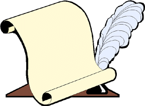

Conferences
- Invited
talks
- Besov spaces associated with Schroedinger operators,
University of
California at Los Angeles, Los Angeles, March, 2002.
- Schroedinger
operators, Besov spaces, and Wavelet computations for thin film image
processing. University of Maryland, October 31, 2002.
- Schroedinger operators, Besov spaces and Wavelet
computations for thin film image processing, Colloquium talk,
University of Houston, Houston, November, 2002.
- Wavelet computing for semigroup operators, NSF FRG
workshop on Wavelets, Frames, and Operator
Theory, University of Maryland, College Park, January, 2003.
- Operator reconstruction in wavelet basis and its
applications in PDEs,
The Sixth International Joint Meeting of the AMS and the SMM, Houston,
May, 2004.
- Operator representations in wavelet basis and applications
in PDEs,
The Second International Conference on Computational Harmonic Analysis,
Vanderbilt University, Nashville, May 24-30, 2004.
- Multiscale
operator reconstructions and time-dependent PDEs, Princeton
University, April, 2005.
- Spectral multipliers for Schrödinger operators. AMS
Special Session on Harmonic Analysis: Trends and Perspectives, Salt
Lake City, Utah, October 7-8, 2006
- Spectral
calculus for Schrödinger operators in one and three dimensions
Johns Hopkins University, Baltimore, November 5-7, 2006
- Spectral
calculus in function spaces and quantum scattering. Harmonic and
Geometric Analysis. Louisiana State University, Baton Rouge, January
3-4, 2007.
- Time decay
of quantum waves on Riemannian manifolds -- Recent development.
Between Harmonic Analysis, Number
Theory and Combinatorics. AMS Conference. Davidson, North Carolina,
March 3-4, 2007.
- Spectral calculus in quantum scattering. Colloquium
talk. University of Rhode Island, Kingston, April 2007.
- Spectral
calculus, Besov spaces and dispersive equations. Colloquium talk.
Memorial University
of Newfoundland, St. Johns, Canada April 14-18, 2008.
- Harmonic
Analysis and Nonlinear Schroedinger Equations. Colloquium,
University of California, Riverside, November
4-6, 2008.
- Strichartz
Estimates for Schroedinger Equation with a Magnetic Potential The
Norbert Wiener Center Seminar, University of Maryland, College Park,
February 17-20, 2009.
- Spectral
Calculus for Schroedinger Operators. PDE-Analysis Seminar, The
Australian National University, Mathematical Sciences Institute,
Canberra, March 2009.
- Spectral
Multipliers for Schroedinger Operators Analysis Seminar, The
University of New South Wales, School of Mathematics and Statistics, Sydney, April 1, 2009.
- Spectral
Calculus for Differential Operators with Nonsmooth Coefficients.
Séminaire d'Analyse, Université de Nantes, Laboratoire de Mathématiques
Jean Leray, France July, 2009.
- Spectral
Calculus for Differential Operators with Nonsmooth Coefficients.
Differential Equations Seminar, University of Missouri, Columbia, March
24-26, 2010.
- Nonlinear
Schroedinger equation with a Magnetic Potential. PDE Seminar,
Georgia Institute of Technology, Atlanta, October 5-6, 2010.
- Harmonic analysis
and PDE 2006
Back to my home
page.